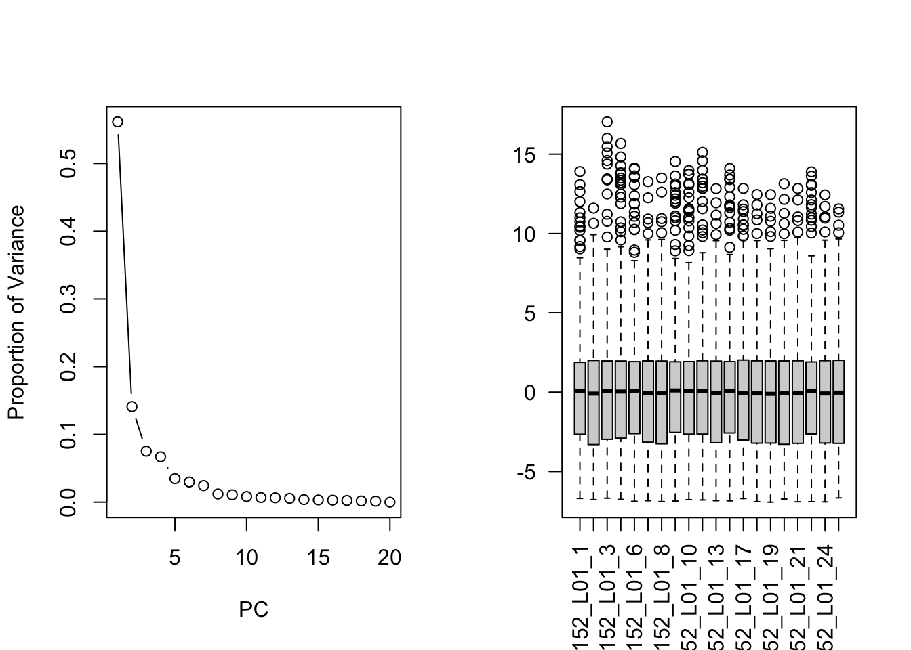
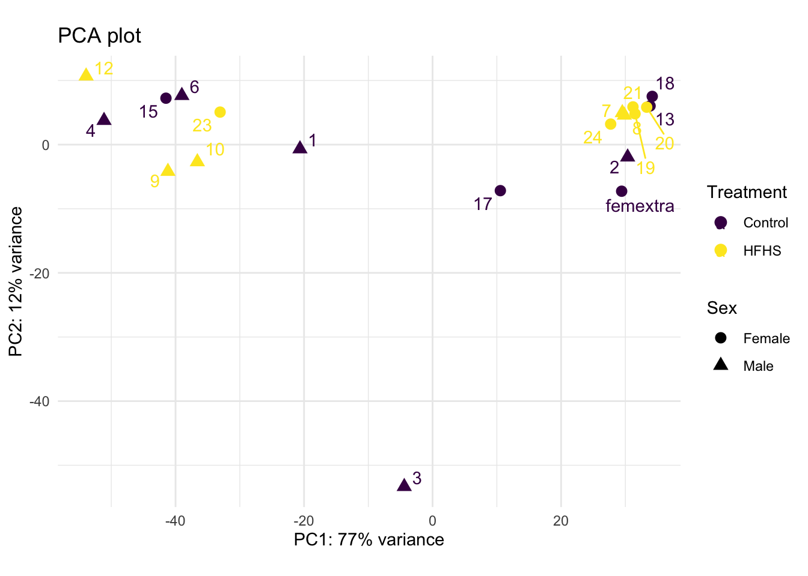
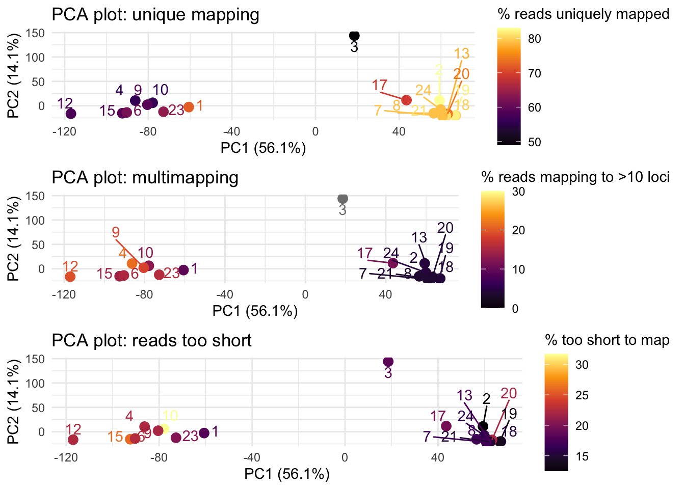
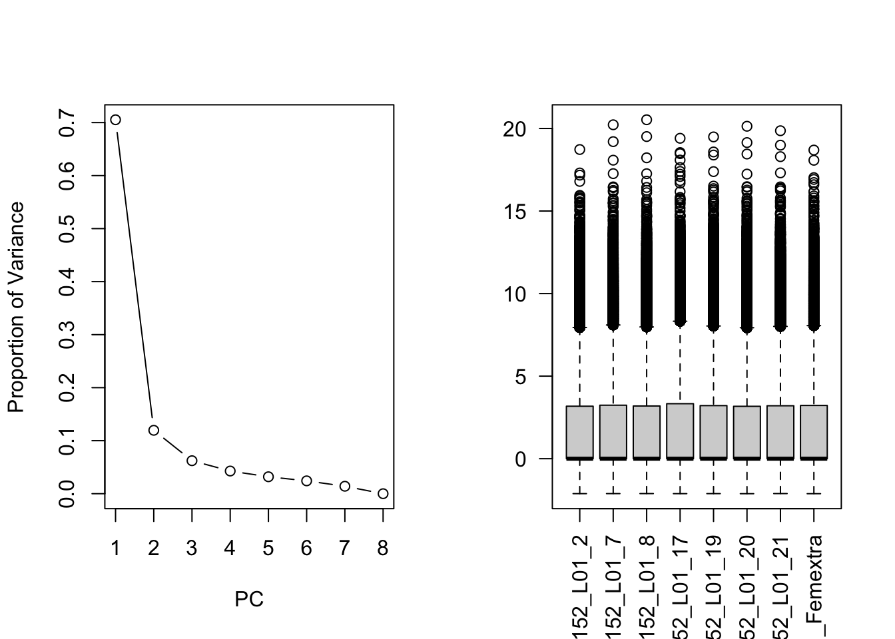
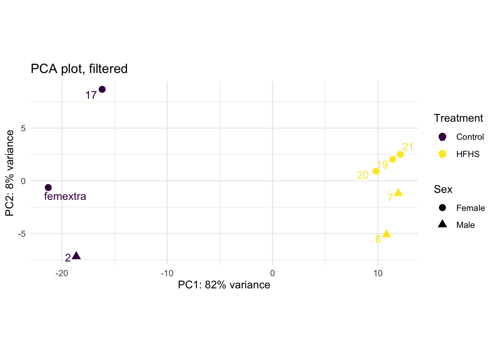
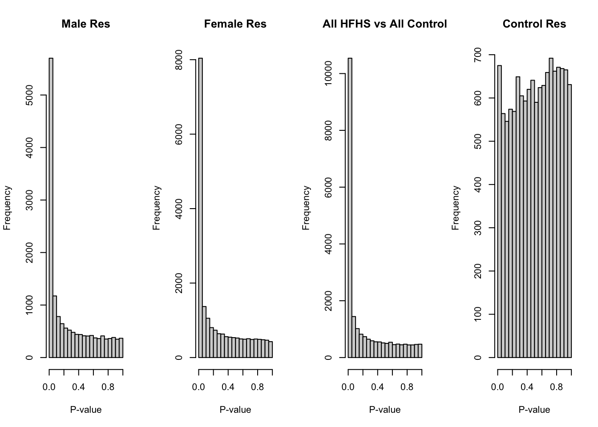
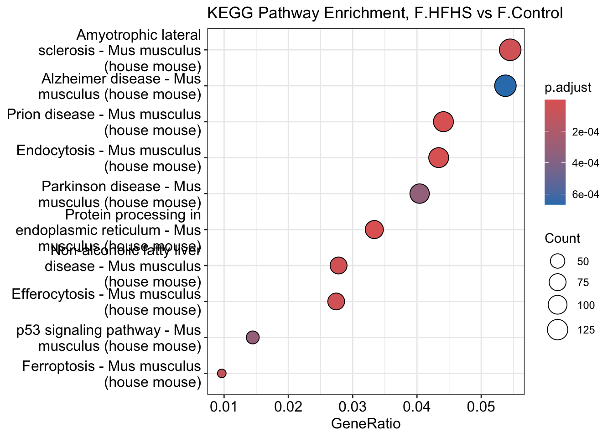
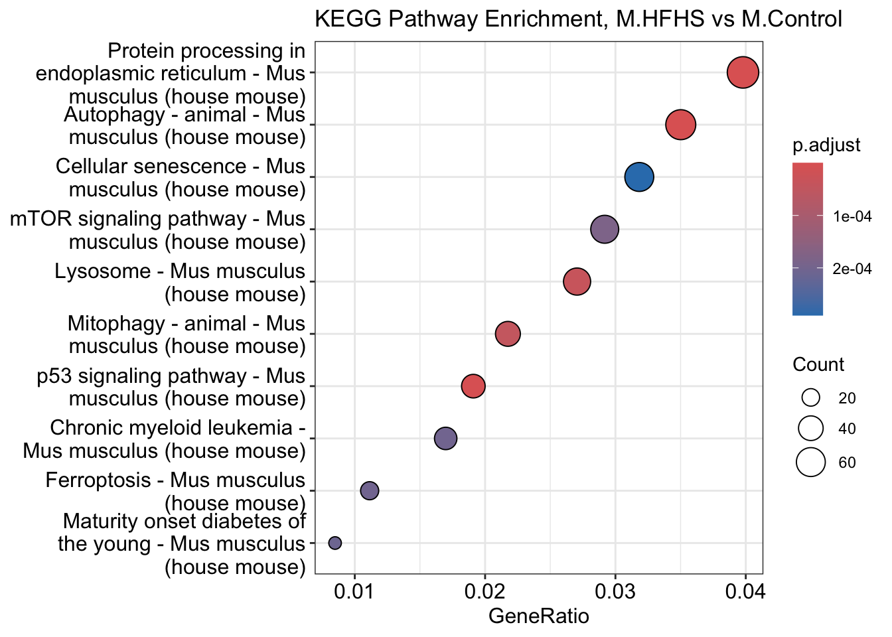
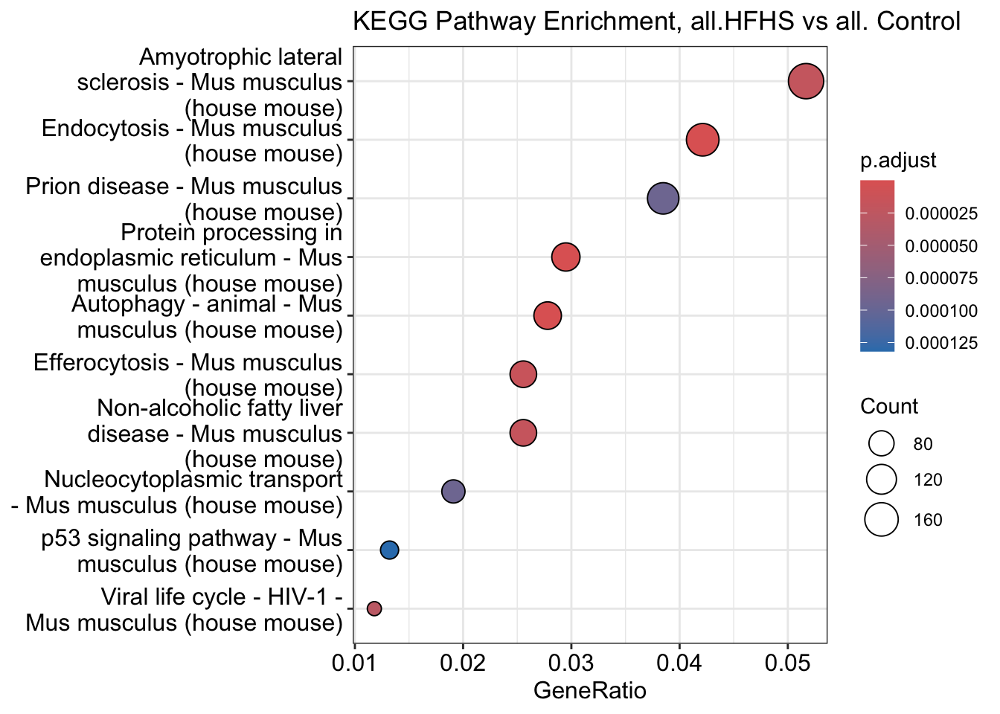

Last updated: 2024-05-27
Checks: 7 0
Knit directory: 240501_LMN_RNAseq/
This reproducible R Markdown analysis was created with workflowr (version 1.7.1). The Checks tab describes the reproducibility checks that were applied when the results were created. The Past versions tab lists the development history.
Great! Since the R Markdown file has been committed to the Git repository, you know the exact version of the code that produced these results.
Great job! The global environment was empty. Objects defined in the global environment can affect the analysis in your R Markdown file in unknown ways. For reproduciblity it’s best to always run the code in an empty environment.
The command set.seed(20240501) was run prior to running
the code in the R Markdown file. Setting a seed ensures that any results
that rely on randomness, e.g. subsampling or permutations, are
reproducible.
Great job! Recording the operating system, R version, and package versions is critical for reproducibility.
Nice! There were no cached chunks for this analysis, so you can be confident that you successfully produced the results during this run.
Great job! Using relative paths to the files within your workflowr project makes it easier to run your code on other machines.
Great! You are using Git for version control. Tracking code development and connecting the code version to the results is critical for reproducibility.
The results in this page were generated with repository version c3a712b. See the Past versions tab to see a history of the changes made to the R Markdown and HTML files.
Note that you need to be careful to ensure that all relevant files for
the analysis have been committed to Git prior to generating the results
(you can use wflow_publish or
wflow_git_commit). workflowr only checks the R Markdown
file, but you know if there are other scripts or data files that it
depends on. Below is the status of the Git repository when the results
were generated:
Ignored files:
Ignored: .DS_Store
Ignored: .Rhistory
Ignored: .Rproj.user/
Untracked files:
Untracked: code/STAR.sh
Untracked: code/cutadapt.sh
Untracked: code/fastqc.sh
Untracked: code/job_picard.sh
Untracked: code/mappingStats.sh
Untracked: code/picard_markDups.sh
Untracked: data/01_trimmed_S250076152_L01_1_Dedup.out.bam
Untracked: data/01_trimmed_S250076152_L01_1_ReadsPerGene.out.tab
Untracked: data/02_trimmed_S250076152_L01_2_Dedup.out.bam
Untracked: data/02_trimmed_S250076152_L01_2_ReadsPerGene.out.tab
Untracked: data/03_rimmed_S250076152_L01_3_Dedup.out.bam
Untracked: data/03_trimmed_S250076152_L01_3_ReadsPerGene.out.tab
Untracked: data/04_trimmed_S250076152_L01_4_ReadsPerGene.out.tab
Untracked: data/05_trimmed_S250076152_L01_4_Dedup.out.bam
Untracked: data/05_trimmed_S250076152_L01_6_Dedup.out.bam
Untracked: data/05_trimmed_S250076152_L01_6_ReadsPerGene.out.tab
Untracked: data/06_trimmed_S250076152_L01_7_Dedup.out.bam
Untracked: data/06_trimmed_S250076152_L01_7_ReadsPerGene.out.tab
Untracked: data/07_trimmed_S250076152_L01_8_Dedup.out.bam
Untracked: data/07_trimmed_S250076152_L01_8_ReadsPerGene.out.tab
Untracked: data/08_trimmed_S250076152_L01_9_Dedup.out.bam
Untracked: data/08_trimmed_S250076152_L01_9_ReadsPerGene.out.tab
Untracked: data/09_trimmed_S250076152_L01_10_Dedup.out.bam
Untracked: data/09_trimmed_S250076152_L01_10_ReadsPerGene.out.tab
Untracked: data/10_trimmed_S250076152_L01_12_Dedup.out.bam
Untracked: data/10_trimmed_S250076152_L01_12_ReadsPerGene.out.tab
Untracked: data/11_trimmed_S250076152_L01_13_Dedup.out.bam
Untracked: data/11_trimmed_S250076152_L01_13_ReadsPerGene.out.tab
Untracked: data/12_trimmed_S250076152_L01_15_Dedup.out.bam
Untracked: data/12_trimmed_S250076152_L01_15_ReadsPerGene.out.tab
Untracked: data/13_trimmed_S250076152_L01_17_Dedup.out.bam
Untracked: data/13_trimmed_S250076152_L01_17_ReadsPerGene.out.tab
Untracked: data/14_trimmed_S250076152_L01_18_Dedup.out.bam
Untracked: data/14_trimmed_S250076152_L01_18_ReadsPerGene.out.tab
Untracked: data/15_trimmed_S250076152_L01_19_Dedup.out.bam
Untracked: data/15_trimmed_S250076152_L01_19_ReadsPerGene.out.tab
Untracked: data/16_trimmed_S250076152_L01_20_Dedup.out.bam
Untracked: data/16_trimmed_S250076152_L01_20_ReadsPerGene.out.tab
Untracked: data/17_trimmed_S250076152_L01_21_Dedup.out.bam
Untracked: data/17_trimmed_S250076152_L01_21_ReadsPerGene.out.tab
Untracked: data/18_trimmed_S250076152_L01_23_Dedup.out.bam
Untracked: data/18_trimmed_S250076152_L01_23_ReadsPerGene.out.tab
Untracked: data/19_trimmed_S250076152_L01_24_Dedup.out.bam
Untracked: data/19_trimmed_S250076152_L01_24_ReadsPerGene.out.tab
Untracked: data/20_trimmed_S250076152_L01_Femextra_Dedup.out.bam
Untracked: data/20_trimmed_S250076152_L01_Femextra_ReadsPerGene.out.tab
Untracked: data/LMN_sequencing_summary_HP.xlsx
Untracked: data/Sample ID_8 week offspring beta-cells_mRNA-seq.xlsx
Untracked: data/gencode.vM34.annotation.gtf
Untracked: data/mappingStats.csv
Untracked: data/sample_sheet.csv
Untracked: output/Poisson_groups_DEGenes_EdgeR.csv
Untracked: output/control_genes_limma.csv
Untracked: output/female_HFHS_vs_Control_DESeq2.csv
Untracked: output/female_HFHS_vs_Control_EdgeR.csv
Untracked: output/female_filt_genes_HFHS_vs_Control_DESeq.csv
Untracked: output/female_genes_limma.csv
Untracked: output/male_HFHS_vs_Control_DESeq2.csv
Untracked: output/male_HFHS_vs_Control_EdgeR.csv
Untracked: output/male_filt_genes_HFHS_vs_Control_DESeq.csv
Untracked: output/male_genes_limma.csv
Untracked: output/sanity_check_M.Control_vs_F.Control_DESeq2.csv
Untracked: output/sanity_check_M.Control_vs_F.Control_EdgeR.csv
Unstaged changes:
Modified: analysis/_site.yml
Deleted: output/README.md
Note that any generated files, e.g. HTML, png, CSS, etc., are not included in this status report because it is ok for generated content to have uncommitted changes.
These are the previous versions of the repository in which changes were
made to the R Markdown
(analysis/RNAseq_analysis_QUALITY_FILT.Rmd) and HTML
(docs/RNAseq_analysis_QUALITY_FILT.html) files. If you’ve
configured a remote Git repository (see ?wflow_git_remote),
click on the hyperlinks in the table below to view the files as they
were in that past version.
| File | Version | Author | Date | Message |
|---|---|---|---|---|
| Rmd | c3a712b | Holly Pinkney | 2024-05-27 | wflow_publish(files = c("analysis/RNAseq_analysis.Rmd", "analysis/RNAseq_analysis_QUALITY_FILT.Rmd", |
library(DESeq2)
library(factoextra)
library(tidyverse)
library(gplots)
library(rtracklayer)
library(ggrepel)
library(RColorBrewer)
library(viridis)
library(gridExtra)
library(org.Mm.eg.db)
library(clusterProfiler)
library(DOSE)
library(pathview)
library(ReactomePA)Load in the sample sheet and counts files, convert the counts files to a matrix
This is based on the excel spreadsheet provided by Lisa. It also has some extra information which is used later in the analysis.
sample_sheet <- read.csv("data/sample_sheet.csv")
sample_sheet[1] <- NULL
names(sample_sheet)[3] <- "Treatment"
names(sample_sheet)[1] <- "LibraryID"
#ensure the main comparisons are factors
sample_sheet$Sex <- factor(sample_sheet$Sex)
sample_sheet$Treatment <- factor(sample_sheet$Treatment)
mapStats <- read.csv("data/mappingStats.csv", header = T)This uses counts outputs (.tab files) produced by STAR aligner using
--quantMode GeneCounts. It is comparable to counts files
produced by HTseq count.
# Get the counts files
fileList <- list.files( path = "data/", pattern = "*ReadsPerGene.out.tab$", full.names = TRUE )
# read in the table but skip the first 4 metadata lines
counts.files <- lapply( fileList, read.table, skip = 4 )
#grab the second column of the dataframe (unstranded counts)
counts <- as.data.frame( sapply( counts.files, function(x) x[ , 2 ] ) )
#create colnames for the counts matrix from the fileList:
#removing the long unnecessary strings and replacing them with nothing
fileList <- gsub( "[_]ReadsPerGene[.]out[.]tab", "", fileList )
fileList <- gsub( "[.][.][/]data[/][/]", "", fileList )
sample_sheet$origID <- fileList
# setting the colNames
colnames(counts) <- fileList
#add in the gene names as rownames (they are in the same order across all samples)
row.names(counts) <- counts.files[[1]]$V1#make DEseq object to assist with viewing the data
dds <- DESeqDataSetFromMatrix(countData = counts,
colData = sample_sheet,
design = ~ 0+Group) # Each sex has an associated treatment variable - see "Group" column in sample sheet
#pre-filtering genes with less than 10 counts in at least 2 samples
nrow(dds)[1] 57126keep <- rowSums(counts(dds) >= 10) >= 2
dds <- dds[keep,]
nrow(dds) # this reduced the dataset from 57k genes to 17k genes. [1] 17328# Normalise for visualisation purposes
#(DESeq does its own normalisation step so don't need to use this as input to DE analysis)
vst <- vst(dds, blind = F)# look at variability captured across PCs
pca <- prcomp(t(assay(vst)))
prop_var <- pca$sdev^2 / sum(pca$sdev^2)
par(mfrow=c(1,2))
plot(prop_var, type = "b", xlab = "PC", ylab = "Proportion of Variance")
logEst <- rlog(dds)
median_counts <- apply(assay(logEst), 2, median) #gets the median counts per sample (i.e. column - specified as "2")
rld_norm <- assay(logEst) - median_counts
boxplot(rld_norm, las = 2)
par(mfrow=c(1,1))The PCA plot is used to look similarity between samples. Based on this experiment, we would expect to see differences between males and females and would hope to see differences between treatment groups (HFHS dam and Control dam)
# plot PCA
pcaData <- plotPCA(vst, intgroup = c("Treatment", "Sex"), returnData = TRUE)
#sort out the labels - use RegEx to extract the digits that are after an underscore and before _ReadsPerGene
pcaData <- pcaData %>%
mutate(LibID = str_extract(name, "(?<=_)(\\d+)$" ))
pcaData$LibID <- ifelse(is.na(pcaData$LibID), "femextra", pcaData$LibID)
percentVar <- round(100 * attr(pcaData, "percentVar"))
ggplot(pcaData, aes(x = PC1, y = PC2, color = Treatment, shape = Sex)) +
geom_point(size =3) +
geom_text_repel(aes(label=LibID), max.overlaps = 40)+
xlab(paste0("PC1: ", percentVar[1], "% variance")) +
ylab(paste0("PC2: ", percentVar[2], "% variance")) +
coord_fixed() +
ggtitle("PCA plot")+
scale_color_viridis(option = "D", discrete = T)+
theme_minimal() 
pc_loadings <- data.frame(pca$x)
pc_loadings$LibraryID <- rownames(pc_loadings)
pc_loadings <- pc_loadings %>%
mutate(LibraryID = str_extract(LibraryID, "(?<=_)(\\d+)$" ))
pc_loadings$LibraryID <- ifelse(is.na(pc_loadings$LibraryID), "femextra", pc_loadings$LibraryID)
merged_data <- merge(pc_loadings, mapStats, by = "LibraryID")
corr_PC1 <- cor(merged_data$PC1, merged_data$PercentUniqMapped)
corr_PC2 <- cor(merged_data$PC2, merged_data$PercenMultiMap)p1 <- ggplot(merged_data, aes(x = PC1, y = PC2, colour = PercentUniqMapped)) +
geom_point(size = 3) +
geom_text_repel(aes(label=LibraryID), max.overlaps = 40)+
scale_color_viridis_c(option = "B")+
labs(
title = "PCA plot: unique mapping",
x = paste0("PC1 (", round(prop_var[1] * 100, 1), "%)"),
y = paste0("PC2 (", round(prop_var[2] * 100, 1), "%)"),
colour = "% reads uniquely mapped") +
theme_minimal()p2 <- ggplot(merged_data, aes(x = PC1, y = PC2, colour = PercenMultiMap)) +
geom_point(size = 3) +
geom_text_repel(aes(label=LibraryID), max.overlaps = 40)+
scale_color_viridis_c(option = "B", limits = c(0,30)) +
labs(
title = "PCA plot: multimapping",
x = paste0("PC1 (", round(prop_var[1] * 100, 1), "%)"),
y = paste0("PC2 (", round(prop_var[2] * 100, 1), "%)"),
colour = "% reads mapping to >10 loci") +
theme_minimal()p3 <- ggplot(merged_data, aes(x = PC1, y = PC2, colour = PercentTooShort)) +
geom_point(size = 3) +
geom_text_repel(aes(label=LibraryID), max.overlaps = 40)+
scale_color_viridis_c(option = "B") +
labs(
title = "PCA plot: reads too short",
x = paste0("PC1 (", round(prop_var[1] * 100, 1), "%)"),
y = paste0("PC2 (", round(prop_var[2] * 100, 1), "%)"),
colour = "% too short to map") +
theme_minimal()
grid.arrange(arrangeGrob(p1, p2, p3, nrow = 3))
problem_sample_IDs <- c("1", "3", "4", "6", "9", "10", "12", "15", "23", "13", "18", "24")
problem_samples <- sample_sheet$origID[sample_sheet$LibraryID %in% problem_sample_IDs]
problem_sample_IDs <- which(sample_sheet$LibraryID %in% problem_sample_IDs)
sample_sheet_filt <- sample_sheet[-problem_sample_IDs, ]
# Identify columns (samples) in the counts matrix to be removed
cols_to_remove <- which(colnames(counts) %in% problem_samples)
counts_filt <- counts[, -cols_to_remove]
dds <- DESeqDataSetFromMatrix(countData = counts_filt,
colData = sample_sheet_filt,
design = ~0+Group) # Each sex has an associated treatment variable - see "Group" column in sample sheet
# Normalise for visualisation purposes
#(DESeq does its own normalisation step so don't need to use this as input to DE analysis)
vst <- vst(dds, blind = F)# look at variability captured across PCs in the heavily filtered object
pca <- prcomp(t(assay(vst)))
prop_var <- pca$sdev^2 / sum(pca$sdev^2)
par(mfrow=c(1,2))
plot(prop_var, type = "b", xlab = "PC", ylab = "Proportion of Variance")
logEst <- rlog(dds)
median_counts <- apply(assay(logEst), 2, median) #gets the median counts per sample (i.e. column - specified as "2")
rld_norm <- assay(logEst) - median_counts
boxplot(rld_norm, las = 2)
par(mfrow=c(1,1))pca <- prcomp(t(assay(vst)))
prop_var <- pca$sdev^2 / sum(pca$sdev^2)
# plot PCA
pcaData <- plotPCA(vst, intgroup = c("Treatment", "Sex"), returnData = TRUE)
# sort out the labels
# use RegEx to extract the digits that are after an underscore and before _ReadsPerGene
pcaData <- pcaData %>%
mutate(LibID = str_extract(name, "(?<=_)(\\d+)$" ))
pcaData$LibID <- ifelse(is.na(pcaData$LibID), "femextra", pcaData$LibID)
percentVar <- round(100 * attr(pcaData, "percentVar"))
ggplot(pcaData, aes(x = PC1, y = PC2, color = Treatment, shape = Sex)) +
geom_point(size =3) +
geom_text_repel(aes(label=LibID), max.overlaps = 40)+
xlab(paste0("PC1: ", percentVar[1], "% variance")) +
ylab(paste0("PC2: ", percentVar[2], "% variance")) +
coord_fixed() +
ggtitle("PCA plot, filtered")+
scale_color_viridis(option = "D", discrete = T)+
theme_minimal()
# Run differential expression
dds <- DESeq(dds)
resultsNames(dds)[1] "GroupFemale.Control" "GroupFemale.HFHS" "GroupMale.Control"
[4] "GroupMale.HFHS" # Get annotation info to put gene names into results table later
gtf <- rtracklayer::import('data/gencode.vM34.annotation.gtf')
gtf_df = as.data.frame(gtf)
gtf_df <- gtf_df %>% dplyr::select(gene_id, gene_name, seqnames)
gtf_df <- unique(gtf_df)# Get the results for males
male_res <- DESeq2::results(dds, c("Group", "Male.HFHS", "Male.Control"))
male_res <- na.omit(male_res)
male_res <- male_res[order(male_res$padj),]
summary(male_res)
out of 14945 with nonzero total read count
adjusted p-value < 0.1
LFC > 0 (up) : 2486, 17%
LFC < 0 (down) : 2735, 18%
outliers [1] : 0, 0%
low counts [2] : 0, 0%
(mean count < 8)
[1] see 'cooksCutoff' argument of ?results
[2] see 'independentFiltering' argument of ?resultsmale_res_outs <- rownames_to_column(as.data.frame(male_res), var = "gene_id")
male_res_outs <- merge(male_res_outs, gtf_df, by = "gene_id", all.x = TRUE)
male_res_outs <- male_res_outs[order(male_res_outs$padj), ]
head(male_res_outs) gene_id baseMean log2FoldChange lfcSE stat
13687 ENSMUSG00000103560.2 4097.4015 3.707872 0.2263804 16.37895
1524 ENSMUSG00000018920.12 656.0108 -4.382137 0.2740906 -15.98791
5563 ENSMUSG00000029657.16 5533.3181 -2.903517 0.1826977 -15.89247
7602 ENSMUSG00000036395.16 1679.0973 3.290928 0.2277003 14.45289
3762 ENSMUSG00000025408.16 3014.9945 -4.174168 0.2916924 -14.31017
5555 ENSMUSG00000029644.8 1593.0517 2.586594 0.1909570 13.54543
pvalue padj gene_name seqnames
13687 2.703842e-60 4.040891e-56 Gm38070 chr1
1524 1.551428e-57 1.159305e-53 Cxcl16 chr11
5563 7.145646e-57 3.559723e-53 Hsph1 chr5
7602 2.403774e-47 8.981101e-44 Glb1l2 chr9
3762 1.890445e-46 5.650541e-43 Ddit3 chr10
5555 8.431963e-42 2.100261e-38 Pdx1 chr5#Get the results for females
female_res <- DESeq2::results(dds, c("Group", "Female.HFHS", "Female.Control"))
female_res <- na.omit(female_res)
female_res <- female_res[order(female_res$padj),]
summary(female_res)
out of 19780 with nonzero total read count
adjusted p-value < 0.1
LFC > 0 (up) : 3512, 18%
LFC < 0 (down) : 4098, 21%
outliers [1] : 0, 0%
low counts [2] : 0, 0%
(mean count < 2)
[1] see 'cooksCutoff' argument of ?results
[2] see 'independentFiltering' argument of ?resultsfemale_res_outs <- rownames_to_column(as.data.frame(female_res), var = "gene_id")
female_res_outs <- merge(female_res_outs, gtf_df, by = "gene_id", all.x = TRUE)
female_res_outs <- female_res_outs[order(female_res_outs$padj), ]
head(female_res_outs) gene_id baseMean log2FoldChange lfcSE stat
7953 ENSMUSG00000034612.8 1807.7009 2.671353 0.1268870 21.05301
16863 ENSMUSG00000103560.2 4097.4015 3.281939 0.1624641 20.20101
6131 ENSMUSG00000029657.16 5533.3181 -2.668483 0.1345212 -19.83689
4155 ENSMUSG00000025408.16 3014.9945 -4.256198 0.2147762 -19.81690
1686 ENSMUSG00000018920.12 656.0108 -3.572908 0.1864099 -19.16694
9827 ENSMUSG00000040918.13 526.1500 -3.218518 0.1772578 -18.15727
pvalue padj gene_name seqnames
7953 2.145977e-98 4.244743e-94 Chst11 chr10
16863 9.590749e-91 9.485251e-87 Gm38070 chr1
6131 1.430353e-87 9.430793e-84 Hsph1 chr5
4155 2.128278e-87 1.052433e-83 Ddit3 chr10
1686 6.989741e-82 2.765142e-78 Cxcl16 chr11
9827 1.124756e-73 3.707947e-70 Slc19a2 chr1# Get the results for controls (sanity check)
control_res <- DESeq2::results(dds, c("Group", "Male.Control", "Female.Control"))
control_res <- na.omit(control_res)
control_res <- control_res[order(control_res$padj),]
summary(control_res)
out of 12527 with nonzero total read count
adjusted p-value < 0.1
LFC > 0 (up) : 11, 0.088%
LFC < 0 (down) : 27, 0.22%
outliers [1] : 0, 0%
low counts [2] : 0, 0%
(mean count < 22)
[1] see 'cooksCutoff' argument of ?results
[2] see 'independentFiltering' argument of ?resultscontrol_res_outs <- rownames_to_column(as.data.frame(control_res), var = "gene_id")
control_res_outs <- merge(control_res_outs, gtf_df, by = "gene_id", all.x = TRUE)
control_res_outs <- control_res_outs[order(control_res_outs$padj), ]
head(control_res_outs) gene_id baseMean log2FoldChange lfcSE stat
9079 ENSMUSG00000047591.6 2832.1982 -1.537332 0.2295094 -6.698342
8990 ENSMUSG00000046805.11 210.7437 -1.787408 0.3424695 -5.219175
1244 ENSMUSG00000017311.16 1264.8734 -1.413786 0.2852983 -4.955466
10584 ENSMUSG00000064370.1 147743.5260 -3.628104 0.7435053 -4.879729
4090 ENSMUSG00000027188.9 886.4796 1.108275 0.2294052 4.831080
10582 ENSMUSG00000064367.1 115512.0559 -3.664373 0.7644625 -4.793398
pvalue padj gene_name seqnames
9079 2.107977e-11 2.640663e-07 Mafa chr15
8990 1.797218e-07 1.125688e-03 Mpeg1 chr19
1244 7.215711e-07 3.013041e-03 Pyy chr11
10584 1.062319e-06 3.326919e-03 mt-Cytb chrM
4090 1.357941e-06 3.402186e-03 Pamr1 chr2
10582 1.639800e-06 3.423629e-03 mt-Nd5 chrMddsAllvAll <- DESeqDataSetFromMatrix(countData = counts_filt,
colData = sample_sheet_filt,
design = ~ 0+Treatment)
ddsAllvAll <- DESeq(ddsAllvAll)
resultsNames(ddsAllvAll)[1] "TreatmentControl" "TreatmentHFHS" # Compare all HFHS vs all Controls:
all.HFHS_vs_all.Control <- DESeq2::results(ddsAllvAll, c("Treatment", "HFHS", "Control"))
all.HFHS_vs_all.Control <- na.omit(all.HFHS_vs_all.Control)
all.HFHS_vs_all.Control <- all.HFHS_vs_all.Control[order(all.HFHS_vs_all.Control$padj),]
summary(all.HFHS_vs_all.Control)
out of 22764 with nonzero total read count
adjusted p-value < 0.1
LFC > 0 (up) : 4851, 21%
LFC < 0 (down) : 5514, 24%
outliers [1] : 0, 0%
low counts [2] : 0, 0%
(mean count < 1)
[1] see 'cooksCutoff' argument of ?results
[2] see 'independentFiltering' argument of ?resultsall.HFHS_vs_all.Control_outs <- rownames_to_column(as.data.frame(all.HFHS_vs_all.Control), var = "gene_id")
all.HFHS_vs_all.Control_outs <- merge(all.HFHS_vs_all.Control_outs, gtf_df, by = "gene_id", all.x = TRUE)
all.HFHS_vs_all.Control_outs <- all.HFHS_vs_all.Control_outs[order(all.HFHS_vs_all.Control_outs$padj),]
head(all.HFHS_vs_all.Control_outs) gene_id baseMean log2FoldChange lfcSE stat
10234 ENSMUSG00000040918.13 526.150 -3.294748 0.12245804 -26.90512
10871 ENSMUSG00000043719.15 2226.869 2.348682 0.08981150 26.15124
6368 ENSMUSG00000029657.16 5533.318 -2.754192 0.10633799 -25.90035
8291 ENSMUSG00000034612.8 1807.701 2.540900 0.09974939 25.47284
9755 ENSMUSG00000039395.9 1351.903 -1.985621 0.08164000 -24.32167
4307 ENSMUSG00000025408.16 3014.994 -4.215222 0.17792808 -23.69059
pvalue padj gene_name seqnames
10234 1.913408e-159 4.355682e-155 Slc19a2 chr1
10871 9.541371e-151 1.085999e-146 Col6a6 chr9
6368 6.598669e-148 5.007070e-144 Hsph1 chr5
8291 3.943426e-143 2.244204e-139 Chst11 chr10
9755 1.156496e-130 5.265294e-127 Mreg chr1
4307 4.507804e-124 1.710261e-120 Ddit3 chr10# look at p-val distributions in genes that are expressed at a base mean greater than 1
par(mfrow=c(1,4))
hist(male_res$pvalue[male_res$baseMean > 1], breaks = 0:20/20, main="Male Res", xlab="P-value")
hist(female_res$pvalue[female_res$baseMean > 1], breaks = 0:20/20, main="Female Res", xlab="P-value")
hist(all.HFHS_vs_all.Control$pvalue[all.HFHS_vs_all.Control$baseMean > 1], breaks = 0:20/20, main = "All HFHS vs All Control", xlab = "P-value")
hist(control_res$pvalue[control_res$baseMean > 1], breaks = 0:20/20, main = "Control Res", xlab = "P-value")
par(mfrow=c(1,1))# write out csvs for further investigation
write.csv(male_res_outs, file = "output/QCfilt_M.HFHS_vs_M.Control_DESeq2.csv")
write.csv(female_res_outs, file = "output/QCfilt_F.HFHS_vs_F.Control_DESeq2.csv")
write.csv(all.HFHS_vs_all.Control_outs, file = "output/QCfilt_all.HFHS_vs_all.Control.csv")
write.csv(control_res_outs, file = "output/QCfilt_M.Control_vs_F.Control_DESeq2.csv")## FEMALES
# Data preparation
f.sig_genes <- subset(female_res, padj < 0.05)
f.gene_list <- f.sig_genes$log2FoldChange
names(f.gene_list) <- rownames(f.sig_genes)
f.gene_list_cleaned <- sub("\\..*", "", names(f.gene_list))
f.gene_ids <- bitr(f.gene_list_cleaned, fromType = "ENSEMBL", toType = "ENTREZID", OrgDb = "org.Mm.eg.db")
names(f.gene_list) <- f.gene_ids$ENTREZID
# Reactome pathway enrichment
f.kegg_enrich <- enrichKEGG(gene = names(f.gene_list), pvalueCutoff = 0.05, organism = "mmu")# View results
dotplot(f.kegg_enrich, showCategory=10) + ggtitle("KEGG Pathway Enrichment, F.HFHS vs F.Control")
write_csv(f.kegg_enrich@result, file = "output/QCfilt_F.HFHS_vs_F.Control_KEGGPathways.csv")## MALES
# Data preparation
m.sig_genes <- subset(male_res, padj < 0.05)
m.gene_list <- m.sig_genes$log2FoldChange
names(m.gene_list) <- rownames(m.sig_genes)
m.gene_list_cleaned <- sub("\\..*", "", names(m.gene_list))
m.gene_ids <- bitr(m.gene_list_cleaned, fromType = "ENSEMBL", toType = "ENTREZID", OrgDb = "org.Mm.eg.db")
names(m.gene_list) <- m.gene_ids$ENTREZID
# Reactome pathway enrichment
m.kegg_enrich <- enrichKEGG(gene = names(m.gene_list), pvalueCutoff = 0.05, organism = "mmu")# View results
dotplot(m.kegg_enrich, showCategory=10) + ggtitle("KEGG Pathway Enrichment, M.HFHS vs M.Control")
write_csv(m.kegg_enrich@result, file = "output/QCfilt_M.HFHS_vs_M.Control_KEGGPathways.csv")## ALL VS ALL
# Data preparation
all.sig_genes <- subset(all.HFHS_vs_all.Control, padj < 0.05)
all.gene_list <- all.sig_genes$log2FoldChange
names(all.gene_list) <- rownames(all.sig_genes)
all.gene_list_cleaned <- sub("\\..*", "", names(all.gene_list))
all.gene_ids <- bitr(all.gene_list_cleaned, fromType = "ENSEMBL", toType = "ENTREZID", OrgDb = "org.Mm.eg.db")
names(all.gene_list) <- all.gene_ids$ENTREZID
# Reactome pathway enrichment
all.kegg_enrich <- enrichKEGG(gene = names(all.gene_list), pvalueCutoff = 0.05, organism = "mmu")# View results
dotplot(all.kegg_enrich, showCategory=10) + ggtitle("KEGG Pathway Enrichment, all.HFHS vs all. Control")
write_csv(all.kegg_enrich@result, file = "output/QCfilt_ALL.HFHS_vs_ALL.Control_KEGGPathways.csv")
sessionInfo()R version 4.4.0 (2024-04-24)
Platform: aarch64-apple-darwin20
Running under: macOS Sonoma 14.4.1
Matrix products: default
BLAS: /Library/Frameworks/R.framework/Versions/4.4-arm64/Resources/lib/libRblas.0.dylib
LAPACK: /Library/Frameworks/R.framework/Versions/4.4-arm64/Resources/lib/libRlapack.dylib; LAPACK version 3.12.0
locale:
[1] en_US.UTF-8/en_US.UTF-8/en_US.UTF-8/C/en_US.UTF-8/en_US.UTF-8
time zone: Australia/Adelaide
tzcode source: internal
attached base packages:
[1] stats4 stats graphics grDevices utils datasets methods
[8] base
other attached packages:
[1] ReactomePA_1.48.0 pathview_1.44.0
[3] DOSE_3.30.1 clusterProfiler_4.12.0
[5] org.Mm.eg.db_3.19.1 AnnotationDbi_1.66.0
[7] gridExtra_2.3 viridis_0.6.5
[9] viridisLite_0.4.2 RColorBrewer_1.1-3
[11] ggrepel_0.9.5 rtracklayer_1.64.0
[13] gplots_3.1.3.1 lubridate_1.9.3
[15] forcats_1.0.0 stringr_1.5.1
[17] dplyr_1.1.4 purrr_1.0.2
[19] readr_2.1.5 tidyr_1.3.1
[21] tibble_3.2.1 tidyverse_2.0.0
[23] factoextra_1.0.7 ggplot2_3.5.1
[25] DESeq2_1.44.0 SummarizedExperiment_1.34.0
[27] Biobase_2.64.0 MatrixGenerics_1.16.0
[29] matrixStats_1.3.0 GenomicRanges_1.56.0
[31] GenomeInfoDb_1.40.0 IRanges_2.38.0
[33] S4Vectors_0.42.0 BiocGenerics_0.50.0
[35] workflowr_1.7.1
loaded via a namespace (and not attached):
[1] splines_4.4.0 later_1.3.2 BiocIO_1.14.0
[4] bitops_1.0-7 ggplotify_0.1.2 polyclip_1.10-6
[7] graph_1.82.0 XML_3.99-0.16.1 lifecycle_1.0.4
[10] rprojroot_2.0.4 vroom_1.6.5 processx_3.8.4
[13] lattice_0.22-6 MASS_7.3-60.2 magrittr_2.0.3
[16] sass_0.4.9 rmarkdown_2.27 jquerylib_0.1.4
[19] yaml_2.3.8 httpuv_1.6.15 cowplot_1.1.3
[22] DBI_1.2.2 abind_1.4-5 zlibbioc_1.50.0
[25] ggraph_2.2.1 RCurl_1.98-1.14 yulab.utils_0.1.4
[28] rappdirs_0.3.3 tweenr_2.0.3 git2r_0.33.0
[31] GenomeInfoDbData_1.2.12 enrichplot_1.24.0 tidytree_0.4.6
[34] reactome.db_1.88.0 codetools_0.2-20 DelayedArray_0.30.1
[37] ggforce_0.4.2 tidyselect_1.2.1 aplot_0.2.2
[40] UCSC.utils_1.0.0 farver_2.1.2 GenomicAlignments_1.40.0
[43] jsonlite_1.8.8 tidygraph_1.3.1 tools_4.4.0
[46] treeio_1.28.0 Rcpp_1.0.12 glue_1.7.0
[49] SparseArray_1.4.3 xfun_0.44 qvalue_2.36.0
[52] withr_3.0.0 fastmap_1.2.0 fansi_1.0.6
[55] callr_3.7.6 caTools_1.18.2 digest_0.6.35
[58] timechange_0.3.0 R6_2.5.1 gridGraphics_0.5-1
[61] colorspace_2.1-0 GO.db_3.19.1 gtools_3.9.5
[64] RSQLite_2.3.6 utf8_1.2.4 generics_0.1.3
[67] data.table_1.15.4 graphlayouts_1.1.1 httr_1.4.7
[70] S4Arrays_1.4.0 scatterpie_0.2.2 graphite_1.50.0
[73] whisker_0.4.1 pkgconfig_2.0.3 gtable_0.3.5
[76] blob_1.2.4 XVector_0.44.0 shadowtext_0.1.3
[79] htmltools_0.5.8.1 fgsea_1.30.0 scales_1.3.0
[82] png_0.1-8 ggfun_0.1.4 knitr_1.46
[85] rstudioapi_0.16.0 tzdb_0.4.0 reshape2_1.4.4
[88] rjson_0.2.21 nlme_3.1-164 curl_5.2.1
[91] org.Hs.eg.db_3.19.1 cachem_1.1.0 KernSmooth_2.23-24
[94] parallel_4.4.0 HDO.db_0.99.1 restfulr_0.0.15
[97] pillar_1.9.0 grid_4.4.0 vctrs_0.6.5
[100] promises_1.3.0 Rgraphviz_2.48.0 KEGGgraph_1.64.0
[103] evaluate_0.23 cli_3.6.2 locfit_1.5-9.9
[106] compiler_4.4.0 Rsamtools_2.20.0 rlang_1.1.3
[109] crayon_1.5.2 labeling_0.4.3 ps_1.7.6
[112] getPass_0.2-4 plyr_1.8.9 fs_1.6.4
[115] stringi_1.8.4 BiocParallel_1.38.0 munsell_0.5.1
[118] Biostrings_2.72.0 lazyeval_0.2.2 GOSemSim_2.30.0
[121] Matrix_1.7-0 hms_1.1.3 patchwork_1.2.0
[124] bit64_4.0.5 KEGGREST_1.44.0 highr_0.10
[127] igraph_2.0.3 memoise_2.0.1 bslib_0.7.0
[130] ggtree_3.12.0 fastmatch_1.1-4 bit_4.0.5
[133] ape_5.8 gson_0.1.0